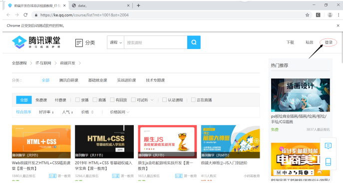
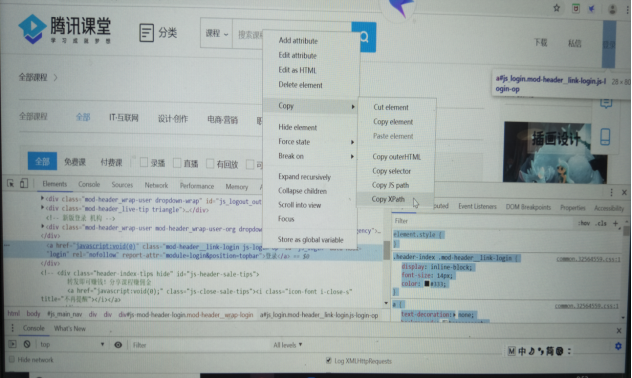
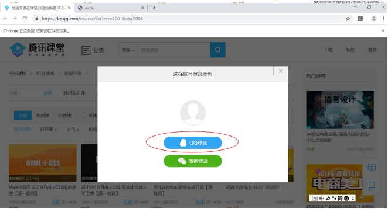
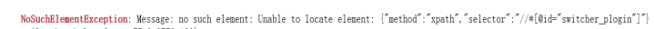
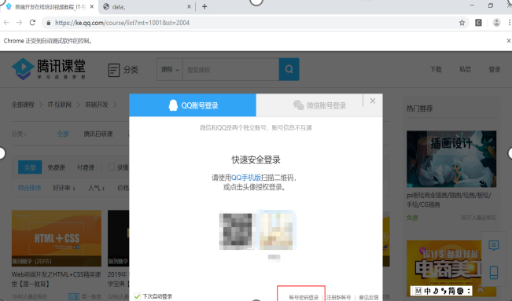
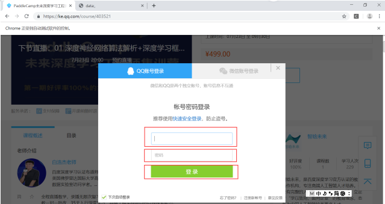

根据腾讯课堂网页登陆问题进行解说（需要安装谷歌浏览器）：
1、导入库
import requests
from selenium import webdriver2、根据腾讯课堂链接，进入页面，获取页面中登陆的xpath，并进行点击操作。

获取xpath的方法是：在如上所示箭头所指登陆位置右击操作，点击检查，获取以下页面。在登陆所在标签处右击进行复制xpath。

driver = webdriver.Chrome()
driver.get("https://ke.qq.com/course/403521")
driver.find_element_by_xpath('//*[@id="js_login"]').click()3、进入登陆页面之后获取登陆方式，本次选择使用qq进行登陆，获取qq登陆的xpath并进行点击操作。

driver.find_element_by_xpath('/html/body/div[4]/div/div[2]/div[2]/a[1]').click()4、点击使用账号密码登陆。在该登陆过程中出现以下错误。

主要原因是无法找到我们定位的xpath，需要先找到定位元素所处的frame，并从frame中寻找该元素。

driver.switch_to_frame("login_frame_qq")//引号中添加frame标签中的name或id值
driver.find_element_by_xpath('//*[@id="switcher_plogin"]').click()5、获取到输入账号密码以及登陆位置的xpath。当运行时再次出现定位不到xpath的情况，使用第四步的方法依旧没能成功，提示所在框架不对，估计是跟第4步的frame标签的name相同的原因吧。最后的解决方法是：先回到最外层框架，之后进入要定位元素的框架，最后对账号密码进行定位。

driver.switch_to.default_content()//回到最外层框架
driver.switch_to_frame("login_frame_qq")//进入定位元素的框架
driver.find_element_by_xpath('//*[@id="u"]').clear()
driver.find_element_by_xpath('//*[@id="u"]').send_keys("输入自己的账号")
driver.find_element_by_xpath('//*[@id="p"]').clear()
driver.find_element_by_xpath('//*[@id="p"]').send_keys("输入自己的密码")6、点击登陆按钮，至此就已经进入网页版的腾讯课堂了。
driver.find_element_by_xpath('//*[@id="login_button"]').click()完整代码如下：
import requests
from selenium import webdriver
driver = webdriver.Chrome()
driver.get("https://ke.qq.com/course/403521")
driver.find_element_by_xpath('//*[@id="js_login"]').click()
time.sleep(5)//等待响应
driver.find_element_by_xpath('/html/body/div[4]/div/div[2]/div[2]/a[1]').click()
time.sleep(2)
driver.switch_to_frame("login_frame_qq")//引号中添加frame标签中的name或id值
driver.find_element_by_xpath('//*[@id="switcher_plogin"]').click()
time.sleep(2)
driver.switch_to.default_content()//回到最外层框架
driver.switch_to_frame("login_frame_qq")//进入定位元素的框架
driver.find_element_by_xpath('//*[@id="u"]').clear()
driver.find_element_by_xpath('//*[@id="u"]').send_keys("输入自己的账号")
driver.find_element_by_xpath('//*[@id="p"]').clear()
driver.find_element_by_xpath('//*[@id="p"]').send_keys("输入自己的密码")
driver.find_element_by_xpath('//*[@id="login_button"]').click()本次实验使用的是Jupyter进行的分段操作，如果合并代码进行实验应改变sleep时间，确保页面已经更新。如有问题，欢迎批评指正，谢谢。